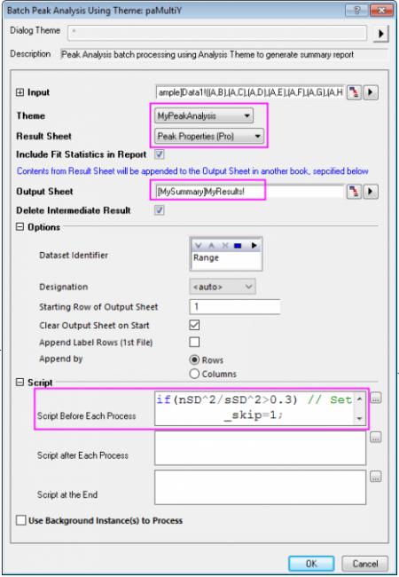
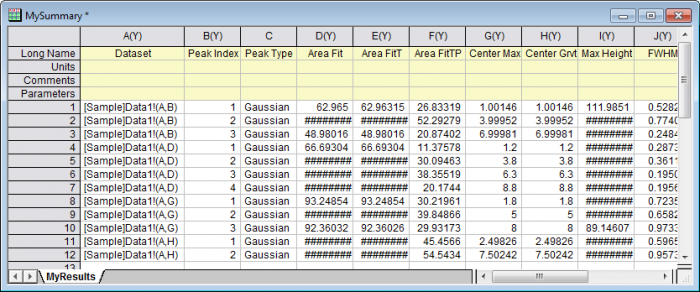

Peakanalyse durch Stapelverarbeitung mit Hilfe eines Design mit Skript vor jedem Prozess
BatchPA-Script-Before
Zusammenfassung
Origin kann die Peakanalyse durch Stapelverarbeitung von mehreren Datensätzen mit Hilfe eines Analysedesigns durchführen. Sie können die Peakdaten vorverarbeiten, z. B. unerwünschte Datensätze ausschließen, bevor Sie die Daten dann tatsächlich mit Hilfe eines vor jedem Prozess festgelegten Skripts eingeben. Beachten Sie, dass dieses Tutorial, auch wenn Peakanalyse durch Stapelverarbeitung mit Design keine auf OriginPro beschränkte Funktion ist, das Ziel des Dialogs Peaks anpassen verwendet wird, um das Design zu erstellen, und Peaks anpassen ist eine Pro-Funktion.
Origin-Version mind. erforderlich: 2016 SR0
Was Sie lernen werden
Dieses Tutorial zeigt Ihnen, wie Sie:
- Analyseeinstellungen als ein Design für die Peakanalyse durch Stapelverarbeitung speichern,
- ein Skript vor jedem Prozess schreiben, um die Daten vorzuverarbeiten,
- eine Peakanalyse durch Stapelverarbeitung mit Hilfe eines Analysedesigns durchführen.
Schritte
Analyseeinstellungen als Design speichern
Dieses Tutorial basiert auf dem Projekt: <Origin-Verzeichnis>\Samples\Tutorial Data.opj.
- Öffnen Sie Tutorial Data.opj und navigieren Sie zu dem Ordner Script Before Process in Batch PA im Projekt Explorer.
- Klicken Sie auf das Arbeitsblatt Data1 in der Arbeitsmappe. Markieren Sie Spalte B und wählen Sie im Menü Analyse: Peaks und Basislinie: Peaks analysieren, um den Dialog zu öffnen. Wählen Sie Peaks anpassen (Pro) als Ziel.
- Klicken Sie auf die Schaltfläche Nächstes und wählen Sie Kein in der Liste Modus Basislinie. Klicken Sie zweimal auf die Schaltfläche Nächstes, um zur Seite Peaks anpassen (Pro) zu gelangen, erweitern Sie den Zweig Diagramm konfigurieren unter Ergebnis und setzen Sie Berichtsdiagramm erstellen auf <Keine>, um das Erzeugen eines Berichtsdiagramms auszuschalten. Dadurch kann der Analyseprozess beschleunigt werden.
- Klicken Sie auf die Schaltfläche neben Dialogdesign und wählen Sie Speichern unter, um den Dialog Design speichern unter... zu öffnen. Geben Sie im Bearbeitungsfeld Designname MyPeakAnalysis ein und klicken Sie auf OK, um es zu speichern.
- Klicken Sie auf die Schaltfläche Fertig, um die Analyse durchzuführen und die Ergebnisse auszugeben.
Skript zur Vorverarbeitung der Peakdaten vorbereiten
Der Dialog Peakanalyse durch Stapelverarbeitung mit Design zeigt drei Bearbeitungsfelder, um Skript vor jedem Prozess, nach jedem Prozess und am Ende von allen Prozessen auszuführen. In diesem Abschnitt wird hauptsächlich gezeigt, wie Sie Skript schreiben, das vor jedem Prozess ausgeführt wird, um die Peakdaten vorzuverarbeiten.
- Aktivieren Sie das Arbeitsblatt Data1 erneut. Sie können den Sparklines der verschiedenen Datensätze entnehmen, dass einige Peakdaten sehr viel Rauschen enthalten, z.B. die Spalten C, E und F. Rauschen, das ein gewisses Maß erreicht, soll aus dem Datensatz ausgeschlossen werden.
- Die Methode, die in diesem Tutorial verwendet wird, um festzustellen, ob die Daten rauschen, folgt der untenstehenden Routine. (Falls Sie die Beschriftungszeile der Sparklines nicht sehen, klicken Sie mit der rechten Maustaste auf Ihre Arbeitsblattspalten und aktivieren Sie Ansicht: Sparklines):
- Filtern Sie die Rohdaten mit einem Hochpass-FFT-Filter, um das hochfrequente Rauschen aus den Daten zu ermitteln.
- Suchen Sie nach der Standardabweichung (SD) des Rauschens und den entsprechenden Rohdaten.
- Legen Sie ein Kriterium fest, dass, wenn das Verhältnis des Quadrats der Standardabweichung des Rauschens zu dem Quadrat der Standardabweichung von den Rohdaten über 30% ist, das Rauschen in den Daten als zu hoch betrachtet wird und die Daten demnach aus der Stapelanalyse ausgeschlossen werden.
- Befolgen Sie die obenstehenden Routine. Das Skript zum vorherigen Ausschluss von rauschenden Daten sieht folgendermaßen aus:
dataset dr; fft_filters iy:=_ry filter:=high oy:=dr; // Perform high-pass fft filter to obtain noise stats dr; double nSD = stats.sd; // Calculate SD of noise stats _ry; double sSD = stats.sd; // Calculate SD of raw data if(nSD^2/sSD^2>0.3) // Set noise identification criteria _skip=1; else _skip=0;
wobei sich _ry auf die aktuellen Y-Daten bezieht und _skip bestimmt, ob der aktuelle Datensatz übersprungen wird.
Datenanalyse durch Stapelverarbeitung mit Hilfe eines Analysedesigns
- Aktivieren Sie das Arbeitsblatt Data1, markieren Sie alle Spalten in dem Blatt und wählen Sie im Menü Analyse: Peaks und Basislinie: Peakanalyse durch Stapelverarbeitung mit Design, um den Dialog zu öffnen.
- Wählen Sie MyPeakAnalysis in der Auswahlliste Design und Peakeigenschaften (Pro) in der Auswahlliste Ergebnisblatt.
- Um Ergebnisse in einem festgelegten Blatt auszugeben, können Sie die Bereichssyntax in dem Bearbeitungsfeld Ausgabeblatt eingeben. Angenommen, Sie möchten das Blatt MyResults in der Mappe MySummary exportieren. Dann können Sie [MySummary]MyResults! in dem Bearbeitungsfeld eingeben.
- Geben Sie das Skript, das wir im Abschnitt oben geschrieben haben, in Skript vor jedem Prozess im Knoten Skript ein. (Hinweis: Klicken Sie auf die Schaltfläche rechts vom Textfeld. Ein Bearbeitungsfeld wird geöffnet, in das Sie Ihr Skript einfügen und in dem Sie es bearbeiten können).

- Klicken Sie auf die Schaltfläche OK, um die Peakanalyse durch Stapelverarbeitung durchzuführen. Sie können sehen, dass Datensätze, die Rauschen enthalten, (Spalte C, E und F) in den Blättern MyResults ausgeschlossen sind.
